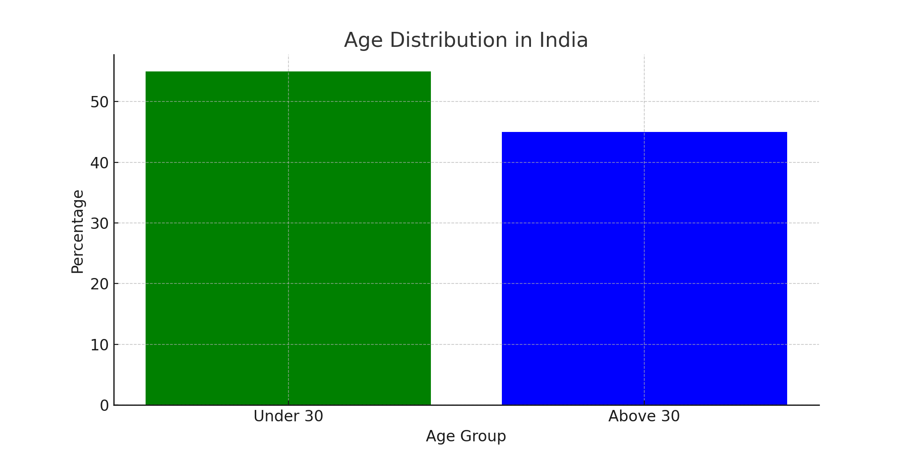
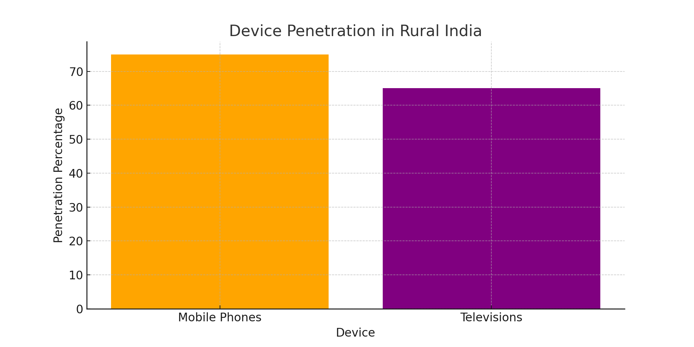
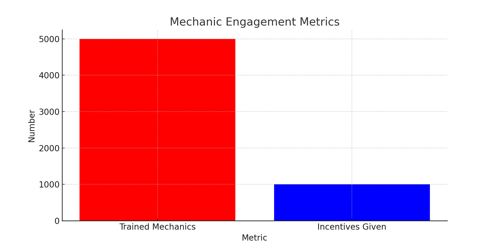
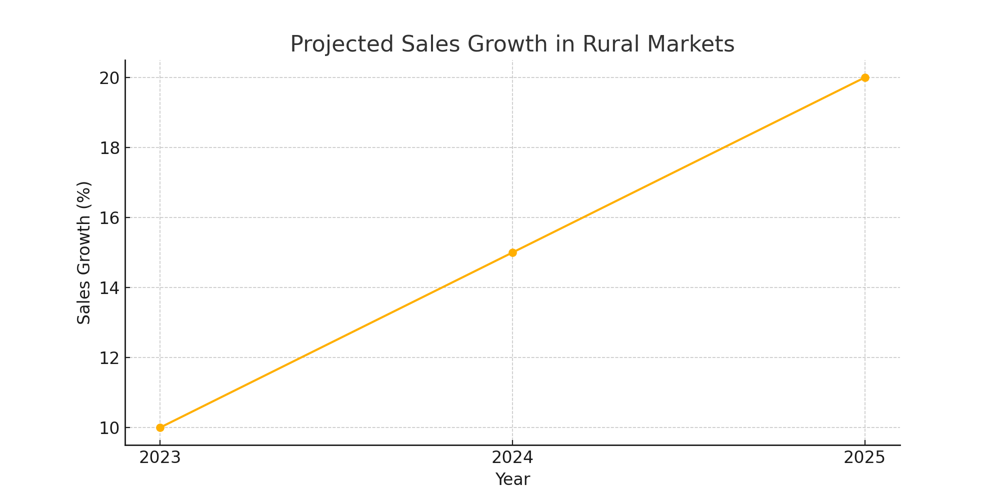

Welcome to our comprehensive plan to boost Castrol Activ's market presence in rural India. This strategy aims to leverage both traditional and digital marketing, community engagement, and value proposition reinforcement to ensure widespread awareness and adoption of Castrol Activ among tier 2 and rural consumers.
Overview
Castrol has a rich legacy and market leadership in the lubricant industry. With the rising demand for 2-wheelers in rural India, there is a significant opportunity to expand Castrol Activ's footprint by targeting the value-conscious rural consumer. This plan outlines the market analysis, proposed solutions, implementation steps, and the expected impact of our strategy.
Market Analysis
Demographic Insights
Youthful Population: 55% of India’s population is under the age of 30, representing a large potential market for 2-wheeler owners.
Rising Income: Increasing income levels in rural areas are driving more people to switch from public transport to personal vehicles, particularly 2-wheelers.

Digital Penetration
Mobile Penetration: With mobile phone penetration higher than television, rural consumers are increasingly aware of urban and global products through digital media.
Internet Access: The proliferation of affordable smartphones and data plans has significantly increased internet access in rural areas, making digital campaigns highly effective.

Competitive Landscape
Market Share: Castrol holds a 25% share in the motorcycle engine oil market, but faces competition from local brands and national oil companies.
Counterfeit Issues: The prevalence of counterfeit products in rural markets affects brand trust and poses a challenge to Castrol’s premium positioning.
Our Products
Castrol Power 1
Targeted to bikers who seek enhanced acceleration and performance. Typically sells at a price that is 20% premium to the market average price.
Castrol Activ
Targeted to bikers who seek to protect their bike’s engine and get the benefit of long engine life. Priced above the market average price but below the Power 1 segment (10-20% premium).
Castrol Popular
Targeted to consumers who are seeking protection for their engine. This is priced at the popular price segment (around market average price).
Proposed Solutions
Brand Trust and Authenticity
Secure Packaging: Introduce tamper-evident packaging and QR codes that consumers can scan to verify product authenticity. This can help build trust and ensure that customers are purchasing genuine Castrol products.
Digital Verification: Develop a mobile app that allows users to verify product authenticity and access information about product benefits and usage. Use blockchain technology to track the distribution of products and prevent counterfeiting.
Value Demonstration
Marketing Campaigns: Launch targeted marketing campaigns that highlight the tangible benefits of Castrol Activ, such as enhanced engine protection and longer engine life. Use real-life testimonials and success stories from rural consumers to build credibility.
Endorsements from Local Mechanics: Engage and train local mechanics to recommend Castrol Activ to their customers. Provide them with incentives and recognition for endorsing Castrol products. Create a certification program for mechanics to become official Castrol partners.
Affordable Premiums
Smaller Packs: Introduce smaller, affordable packs of Castrol Activ to lower the entry barrier for first-time users. Offer value packs that provide cost savings for regular users.
Promotional Offers: Provide introductory offers, discounts, and bundled packages to encourage trials. Implement a loyalty program where customers can earn points for purchases, which can be redeemed for discounts or free products.
Implementation Plan
Mechanic Engagement
Training Programs: Conduct workshops and training sessions for mechanics to educate them on the benefits of Castrol products. Provide certification and incentives for recommending Castrol to their customers.
Incentive Schemes: Offer performance-based incentives for mechanics who consistently recommend Castrol Activ. Develop a rewards program for mechanics to earn points for every sale they generate.

Digital Campaigns
Social Media Marketing: Use platforms like Facebook, Instagram, and WhatsApp to run targeted ad campaigns. Create engaging content, such as short videos, infographics, and customer testimonials, to capture the attention of rural consumers.
Mobile Marketing: Send SMS and WhatsApp messages with special offers, tips, and product information. Ensure the messages are localized to the language and culture of the area.
Community Programs
Local Sponsorships: Sponsor local sports events, cultural festivals, and community gatherings to increase brand visibility and goodwill. Engage with community leaders to build trust and rapport.
Educational Initiatives: Conduct educational sessions on vehicle maintenance and the importance of using high-quality engine oils. Partner with local schools and colleges for awareness programs.
Expected Impact and KPIs
Sales Growth
Market Share Increase: Target a 5-10% increase in market share within the first year. Track sales volume and market penetration in rural areas.
Revenue Growth: Projected revenue growth of 15-20% from rural markets. Monitor monthly and quarterly sales performance.

Brand Loyalty
Customer Retention: Increase repeat purchase rates by 20-25%. Track customer satisfaction and loyalty metrics.
Brand Advocacy: Encourage word-of-mouth referrals from satisfied customers. Measure brand advocacy through customer surveys and feedback.
Trust Metrics
Reduction in Counterfeiting: Decrease in counterfeit product incidents by 30-40%. Monitor authenticity verification through the mobile app.
Consumer Trust: Increase in consumer trust and confidence in the brand. Track trust metrics through surveys and feedback.